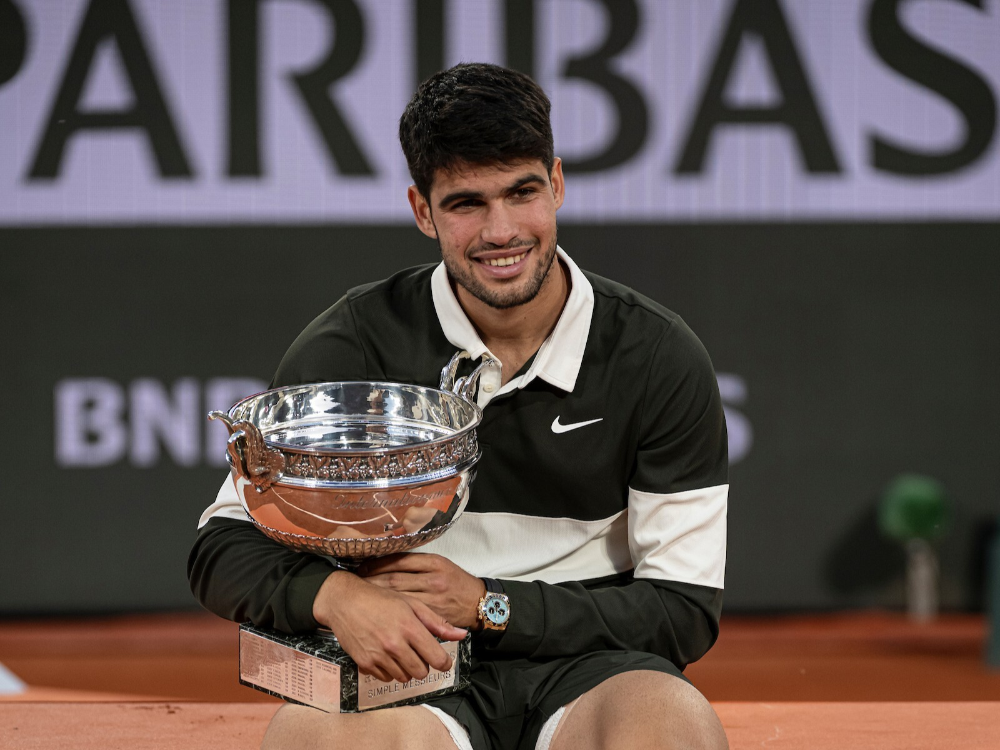
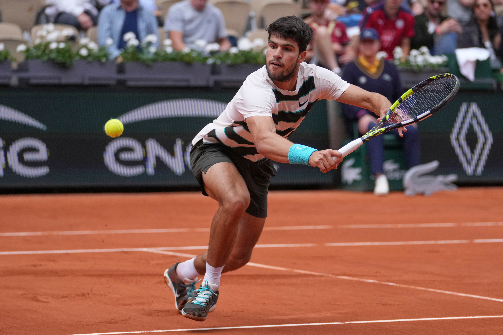
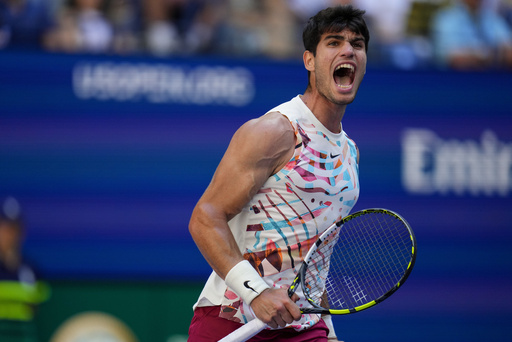
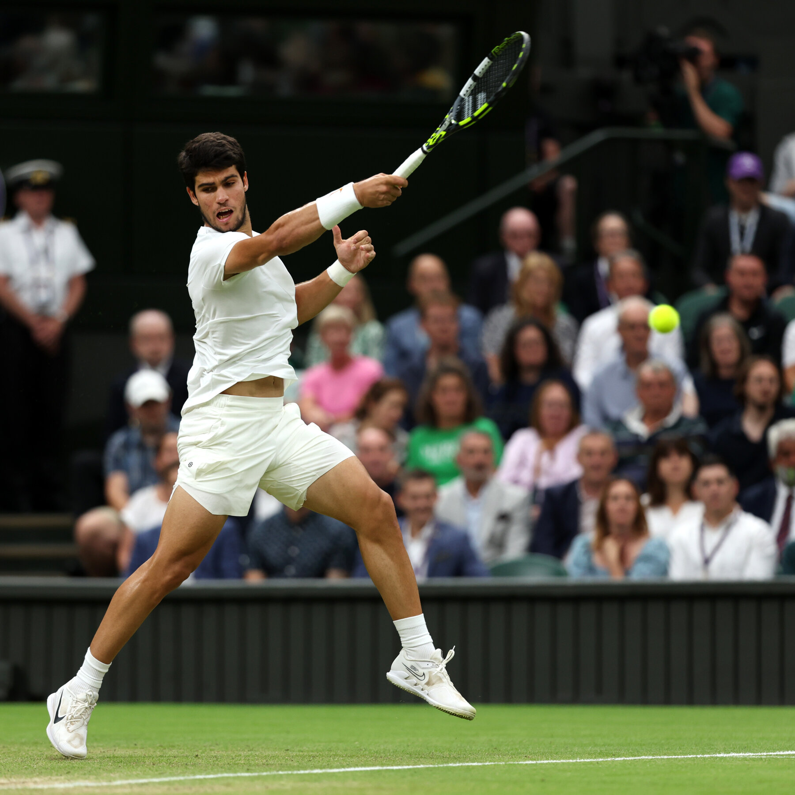

Carlos Alcaraz
I've been playing tennis since high school and it has always been one of my greatest passions. When I discovered Carlos Alcaraz, I knew I was watching something special. His energy, speed, and competitive spirit on the court is unlike anything I've ever seen. This page is my tribute to the greatest tennis player of his generation — welcome to the official fan page of Carlos Alcaraz.
The Future of Tennis 🎾

About Carlos
Carlos Alcaraz Garfia, born May 5, 2003, in El Palmar, Spain, is a professional tennis player who has taken the world by storm. Known for his explosive speed, powerful groundstrokes, and incredible court coverage, Alcaraz became the youngest World No. 1 in ATP history at just 19 years old. He has already won multiple Grand Slam titles and is widely considered the face of the next generation of tennis.

- US Open 2022
- Surface: Hard Court
- Defeated: Casper Ruud in the final (6-4, 2-6, 7-6, 6-3)
- Became youngest World No. 1 in ATP history at age 19
- Wimbledon 2023
- Surface: Grass
- Defeated: Novak Djokovic in the final (5 sets)
- His first Wimbledon title
- French Open 2024
- Surface: Clay
- Defeated: Alexander Zverev in the final
- Completed the Channel Slam (French Open + Wimbledon same year)
- Wimbledon 2024
- Surface: Grass
- Defeated: Novak Djokovic in straight sets
- Successfully defended his Wimbledon title
- French Open 2025
- Surface: Clay
- Defeated: Jannik Sinner in the final (longest Roland Garros final ever — 5 hrs 29 min)
- Retained his French Open crown
- US Open 2025
- Surface: Hard Court
- Defeated: Jannik Sinner in the final (4 sets)
- Reclaimed World No. 1 ranking
- Australian Open 2026
- Surface: Hard Court
- Defeated: Novak Djokovic in the final (2-6, 6-2, 6-3, 7-5)
- Became youngest player in Open Era to complete the Career Grand Slam at age 22
Youngest ATP World No. 1 in History


Watch Him Play
